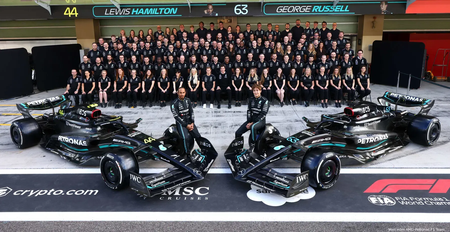
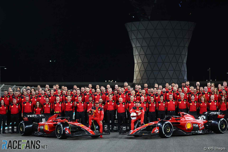

Equipes da Fórmula 1
- Mercedes:  Dominante na última década, com vários campeonatos de construtores.
- Red Bull Racing:
- Conhecida por sua inovação e desempenho, especialmente com Max Verstappen.
- Ferrari: 
- A equipe mais histórica da Fórmula 1, com uma rica tradição e muitos títulos.
- McLaren: Uma das equipes mais icônicas, com uma história de sucesso e inovação.
- Aston Martin: Uma equipe em ascensão, buscando competir com os gigantes da Fórmula 1.
- Alpine: A equipe francesa que tem se destacado nas últimas temporadas.
- AlphaTauri: A equipe irmã da Red Bull, focada em jovens talentos.
- Williams: Uma equipe histórica que busca retornar ao seu antigo esplendor.
- Haas: A equipe americana que tem se esforçado para se estabelecer na Fórmula 1.
- Alfa Romeo: Uma equipe com uma rica história e um forte compromisso com a competição.

© 2025 Fórmula 1 - Todos os direitos reservados.